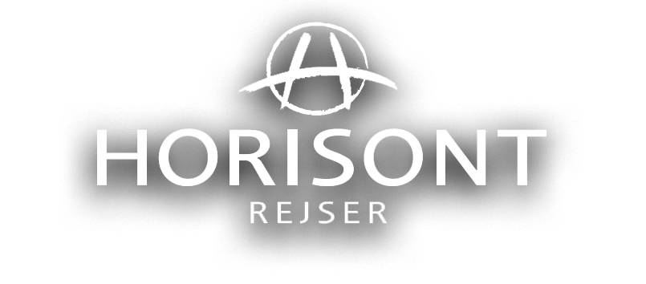
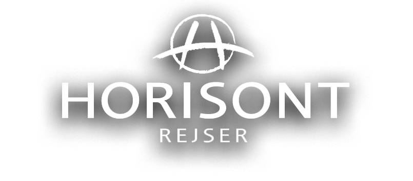

BAGAN
PAGODE-SLETTEN
Bagan er Myanmars gamle hovedstad i den nordlige del af landet.
Byen spreder sig nu ud over den gamle bykerne, og udenfor byen ligger en slette med mere end 2.000 pagoder med hver deres karakteriske udtryk.
Det giver mulighed for at cykle rundt blandt templerne eller blot udvælge et par stykker, hvorfra du kan nyde den smukke udsigt og se solen gå ned over sletten.
Hvis du da ikke ønsker at se det hele fra oven i luftballon.